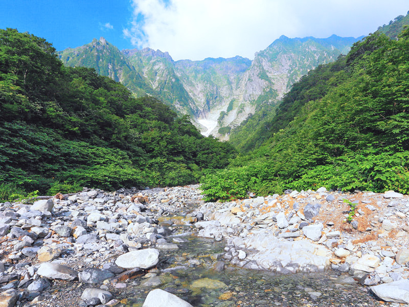
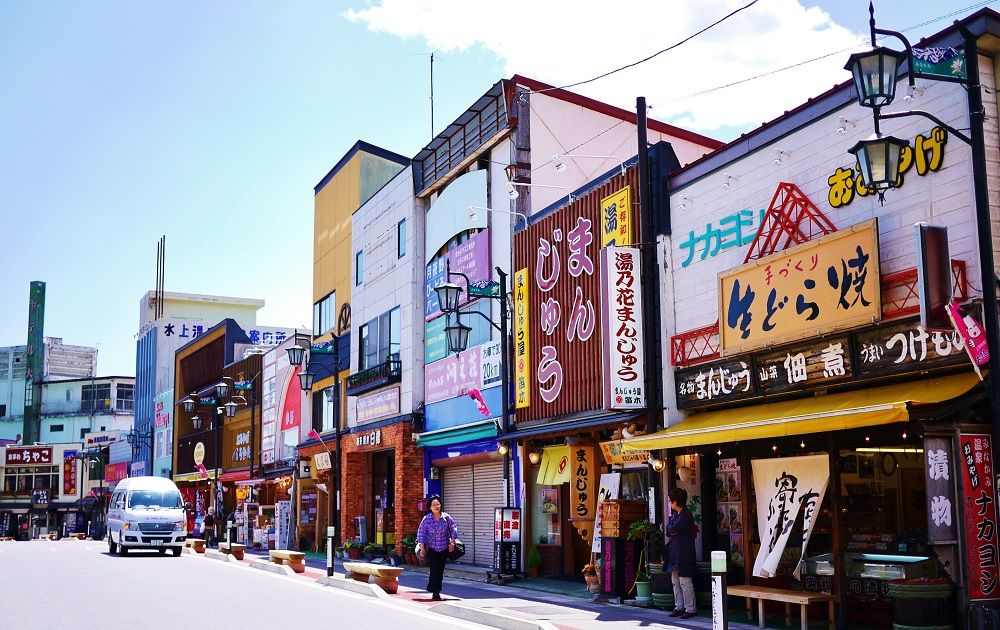
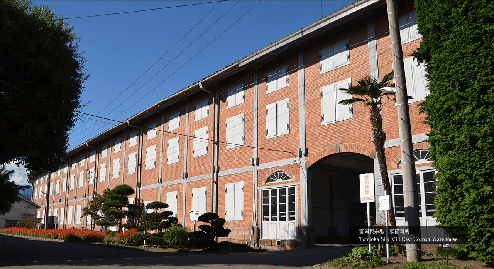
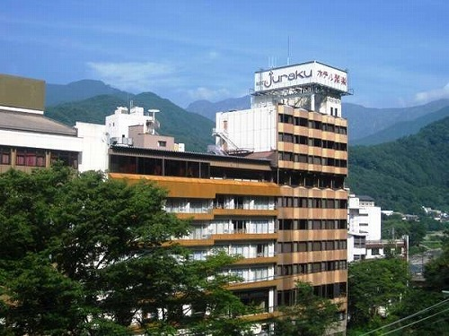

Hot Spring
Milky Way
Hot Spring
Milky Way
2019年9月15日〜2019年9月16日の1泊2日で群馬県の水上町への旅行です。温泉でゆっくり過ごし、美味しいものを食べて、自然にふれてリフレッシュしましょう。そのためには、以下の目標を守りましょう！

みなかみ町は、群馬県の北部に位置する町で温泉地として有名です。自然が豊かで谷川岳でのハイキングやロープウェイも人気です。

ＪＲ水上駅前には温泉街が広がっており、何処か懐かしさも感じる雰囲気で訪れる旅人を出迎えてくれます。
自然豊かな「水上温泉郷」には、美味しいご馳走もいっぱい 特にオススメなのが、水上(みなかみ)で栽培された香り豊かな舞茸や山菜の天麩羅と共にいただくお蕎麦。天麩羅だけではなく、群馬産の蕎麦粉と谷川岳の名水で打つ蕎麦の味は格別です！

国宝であり、世界遺産にも登録された富岡製糸場は、明治政府が日本の近代化のために設立した製糸場で、現在までほぼ変わらない姿で残っている大変貴重な施設となっています。現在、建物は富岡市に寄贈され、市によって保存管理が行われています。
9:00〜16:00の間は、上州富岡駅から『まちなか周遊観光バス』が運行しています。

水上の自然を存分に味わえるリゾートホテル。全10種のお風呂で湯めぐりを。ライブ感あふれるブッフェで作りたてグルメを満喫！
谷川岳天神平で星を見たことありますか？漆黒の夜空が広がる天神平で遥かなる銀河を望む天体ショー☆彡